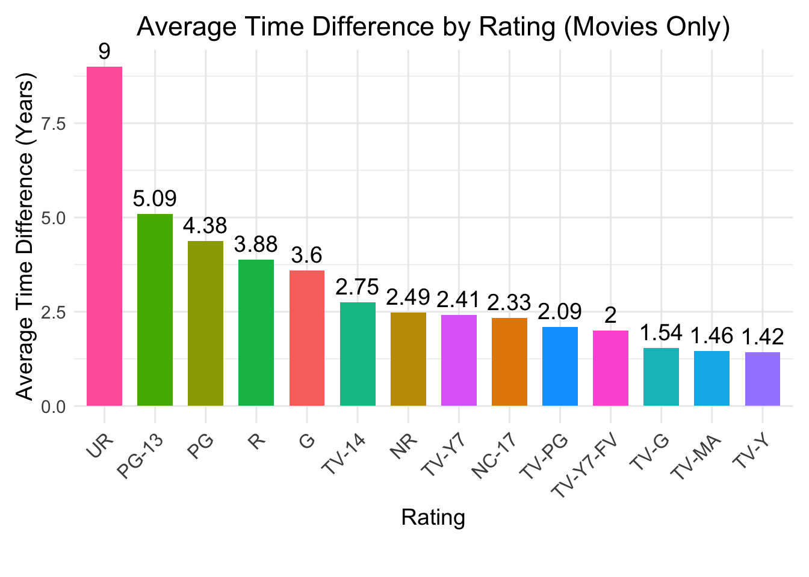

tuesdata <- tidytuesdayR::tt_load('2021-04-20')
tuesdata <- tidytuesdayR::tt_load(2021, week = 17)
netflix <- tuesdata$netflix
library(tidyverse)Netflix Movies
Let’s analyze Netflix data
Some Trends in Netflix Movies
Objective: Analyze some interesting trends in Netflix movies as of 2019
This dataset consists of tv shows and movies available on Netflix as of 2019. The dataset is collected from Flixable which is a third-party Netflix search engine.
In 2018, Flixable released an interesting report which shows that the number of TV shows on Netflix has nearly tripled since 2010. The streaming service’s number of movies has decreased by more than 2,000 titles since 2010, while its number of TV shows has nearly tripled. It will be interesting to explore what other insights can be obtained from the same dataset.
Integrating this dataset with other external datasets such as IMDB ratings, rotten tomatoes can also provide many interesting findings.
Original Data
library(DT)
# Display the first 5 rows of the netflix dataset
datatable(
netflix[1:5, ], # Select the first 5 rows
options = list(
pageLength = 5, # Show 5 rows
scrollX = TRUE, # Enable horizontal scrolling
dom = 't', # Show only the table without search box, etc.
autoWidth = TRUE # Adjust column widths automatically
),
caption = "First 5 Rows of the Netflix Dataset"
)The above sample table shows the first five rows of the original data. Descriptions of the variables are the following:
- show_id: Unique ID for every Movie / Tv Show
- type: Identifier - A Movie or TV Show
- title: Title of the Movie / Tv Show
- director: Director of the Movie/Show
- cast: Actors involved in the movie / show
- country: Country where the movie / show was produced
- date_added: Date it was added on Netflix
- release_year: Actual Release year of the movie / show
- rating: TV Rating of the movie / show
- duration: Total Duration - in minutes or number of seasons
- listed_in: Genre
- description: Summary description of the film/show
1. Who are the actors with the most movie appearances? Let’s find the top 5 actors by the number of appearances.
# We want to look at actors for movies
actor_count <- netflix |>
filter(type == "Movie", !is.na(cast)) |>
separate_rows(cast, sep = ",\\s*") |>
count(cast, sort = TRUE)
# Top 5 actors
top_5_actors <- actor_count |>
slice_head(n = 5)
# Creating a bar chart but having the names on the vertical axis since they are long
ggplot(top_5_actors, aes(x = reorder(cast, n), y = n)) +
geom_bar(stat = "identity", fill = "steelblue") +
coord_flip() +
labs(
title = "Top 5 Actors Appearing in Netflix Titles",
x = "Actor",
y = "Number of Appearances"
) +
theme_minimal() 
Interesting, I actually do not know any of these actors/actresses. Upon some research, I have found that all of them are Indian actors/actresses. These actors/actresses were very active in their respective careers.
As a side analysis, let’s find out which countries produced the most number of movies?
# Counting the movies by the countru they were produced
country_count_movies <- netflix |>
filter(type == "Movie", !is.na(country)) |>
separate_rows(country, sep = ",\\s*") |>
count(country, sort = TRUE)
# Finding the top 5 countries
top_5_countries <- country_count_movies |>
slice_head(n = 5)
ggplot(top_5_countries, aes(x = reorder(country, n), y = n)) +
geom_bar(stat = "identity", fill = "steelblue") +
coord_flip() +
labs(
title = "Top 5 Countries Producing the Most Netflix Movies",
x = "Country",
y = "Number of Movies"
) +
theme_minimal()Unsurprisingly, the US has produced the most Netflix movies. This makes sense given that Hollywood is the global hub of film production. The US has produced more than double the amount of movies than second place India and more than the movie productions of the next four countries combined. With the growing size of Bollywood, India comes in for second place. This may speak to the high number of Indian actors/actresses in the first study.
2. Most popular words in movie titles:
I have always wondered which words are commonly used in movie titles. We have excluded articles, pronouns, prepositions and any common stop words.
library(knitr)
library(kableExtra)
library(stringr)
# A list of words we want to exclude
stop_words <- c("a", "an", "the", "and", "in",
"on", "of", "with", "for", "to",
"he", "she", "my", "it", "him",
"her", "above", "below", "top",
"bottom", "between", "front", "back",
"beneath", "they", "me", "you", "them",
"us", "we", "that", "this", "these",
"those", "I", "from", "i", "at", "")
# Filter and preprocess the titles
word_count <- netflix |>
subset(type == "Movie" & !is.na(title)) |>
transform(clean_title = str_remove_all(title, "[^A-Za-z\\s]")) |>
transform(clean_title = tolower(clean_title)) |>
{\(df) data.frame(clean_title = unlist(strsplit(df$clean_title, "\\s+")))}() |>
subset(!clean_title %in% stop_words) |>
table() |>
as.data.frame()
# Sort and rename columns
word_count <- word_count[order(-word_count$Freq), ]
colnames(word_count) <- c("Word", "Frequency")
# Display top 10 words as a formatted table
word_count |>
head(10) |>
kable(
caption = "<strong style='color:black; font-size:16px;'>Top 10 Most Frequent Words in Netflix Movie Titles</strong>",
col.names = c("Word", "Frequency"),
row.names = FALSE, # Suppress row numbers
align = c("l", "c"),
escape = FALSE
) |>
kable_styling(
bootstrap_options = c("striped", "hover", "condensed"),
full_width = FALSE,
position = "center"
)| Word | Frequency |
|---|---|
| love | 91 |
| christmas | 72 |
| movie | 60 |
| man | 58 |
| story | 54 |
| life | 44 |
| world | 42 |
| little | 39 |
| live | 38 |
| one | 38 |
Love and Christmas are the top two most common words. These results do makes sense as these are popular topics.
3. Steven Spielberg
The most commercially successful filmmaker in the history of Hollywood is Steven Spielberg. Steven Spielberg is the creator of many of the most successful franchises and stand-alone films. They include the Indiana Jones series, the Jurassic Park series, Saving Private Ryan, and Jaws. Let’s figure out which of his movies are on Netflix.
# Filter for Spielberg movies
spielberg_movies <- netflix |>
filter(type == "Movie", str_detect(director, "Steven Spielberg"))
spielberg_movies |>
select(title) |> # Select only the title column
rename("Title" = title) |> # Rename the column for clarity
kable(
caption = "<strong style='color:black; font-size:16px;'>Steven Spielberg Movies Available on Netflix</strong>",
col.names = c("Title"),
align = "l",
escape = FALSE
) |>
kable_styling(
bootstrap_options = c("striped", "hover", "condensed"),
full_width = FALSE,
position = "center"
)| Title |
|---|
| Catch Me If You Can |
| Hook |
| Indiana Jones and the Kingdom of the Crystal Skull |
| Indiana Jones and the Last Crusade |
| Indiana Jones and the Raiders of the Lost Ark |
| Indiana Jones and the Temple of Doom |
| Lincoln |
| Schindler's List |
| The Adventures of Tintin |
| War Horse |
Surprising, only 10 are available on Netflix. Given sheer amount of Spielberg movies we know of, this a very small number.
4. Too lazy for theaters. When can I watch a new movie on Netflix?
Following Covid-19, fewer people are going to the movies. At the same time over-the-top streaming services have become more influential. Nowadays, people are wondering “when is my favorite movie going to be on Netflix?”. So let’s find out, on average, how long does it take for a movie to be added on Netflix.
Two caveats: - We have exact dates for the when the movie was added, but only the year data is available for when it was released. Hence, we will just find the number of years. - Netflix started streaming services in 2007. Any movie produced before 2007 will be excluded because that just automatically increases the average.
library(lubridate)
library(knitr)
library(kableExtra)
netflix_movies <- netflix |>
subset(type == "Movie" & !is.na(date_added) & !is.na(release_year)) |>
transform(
date_added = mdy(date_added),
release_year = as.numeric(release_year)
)
# Extract the Year from the date_added Column
netflix_movies <- netflix_movies |>
transform(
added_year = year(date_added)
)
# Calculate Time Difference in Years
netflix_movies <- netflix_movies |>
transform(
time_diff_years = added_year - release_year
)
# Exclude movies produced before 2007
netflix_movies_filtered <- netflix_movies |>
subset(!is.na(time_diff_years) & time_diff_years >= 0 & release_year >= 2007)
average_time_diff <- mean(netflix_movies_filtered$time_diff_years, na.rm = TRUE)
data.frame(`Average Time Difference (Years)` = round(average_time_diff, 2)) |>
kable(
col.names = c("Average Time Difference (Years)"),
align = "c"
) |>
kable_styling(
bootstrap_options = c("striped", "hover", "condensed"),
full_width = FALSE,
position = "center"
)| Average Time Difference (Years) |
|---|
| 2.46 |
On average, it takes 2.46 years for a movie to be added to Netflix after being released in theaters.
Additionally, let’s look at how the average time differ across content ratings. The motion picture content ratings used to indicate the suitability of a movie for different audiences. Below are the description of each rating retrieved from Spectrum.
- G: General audiences, suitable for all ages
- PG: Parental guidance suggested, some material may not be suitable for children
- PG-13: Parents strongly cautioned, some material may be inappropriate for children under 13
- R: Restricted, under 17 requires an accompanying parent or adult guardian
- NC-17: Clearly adult
- UR: Unrated
- NR: Not rated (not officially assigned)
- TV-Y: All children
- TV-Y7: Directed to older children
- TV-Y7-FV: Directed to older children - fantasy violence
- TV-G: General audience
- TV-PG: Parental guidance suggested
- TV-14: Parents strongly cautioned
- TV-MA: Mature audience only
library(lubridate)
library(ggplot2)
movies_data <- netflix |>
subset(type == "Movie" & !is.na(date_added) & !is.na(release_year)) |>
transform(
date_added = mdy(date_added),
release_year = as.numeric(release_year)
)
movies_data <- movies_data |>
transform(
added_year = year(date_added)
)
movies_data <- movies_data |>
transform(
time_diff_years = added_year - release_year
)
movies_filtered <- movies_data |>
subset(!is.na(time_diff_years) & time_diff_years >= 0 & release_year >= 2007)
average_time_by_rating_table <- aggregate(
time_diff_years ~ rating,
data = movies_filtered,
FUN = function(x) mean(x, na.rm = TRUE)
)
average_time_by_rating_table <- average_time_by_rating_table[order(-average_time_by_rating_table$time_diff_years), ]
ggplot(average_time_by_rating_table, aes(x = reorder(rating, -time_diff_years), y = time_diff_years, fill = rating)) +
geom_bar(stat = "identity", width = 0.7, show.legend = FALSE) +
geom_text(aes(label = round(time_diff_years, 2)), vjust = -0.5, size = 5) +
labs(
title = "Average Time Difference by Rating (Movies Only)",
x = "Rating",
y = "Average Time Difference (Years)"
) +
theme_minimal() +
theme(
text = element_text(size = 14),
plot.title = element_text(hjust = 0.5),
axis.text.x = element_text(angle = 45, hjust = 1, size = 12),
plot.margin = margin(10, 10, 30, 10)
) +
coord_cartesian(clip = "off")
This is a bar chart of the different averages computed for each movie rating type.
Unrated movies (UR) exhibited the longest wait time for the movie to be uploaded on Netflix. This was followed by PG-13 rated movies and PG rated movies. UR, PG-13, PG, R, G, TV-14, and NR rated movies all took longer than the average time for all movies.